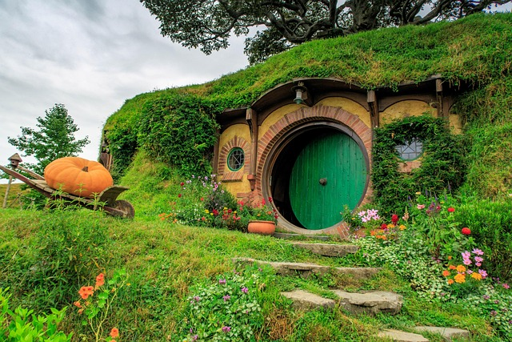
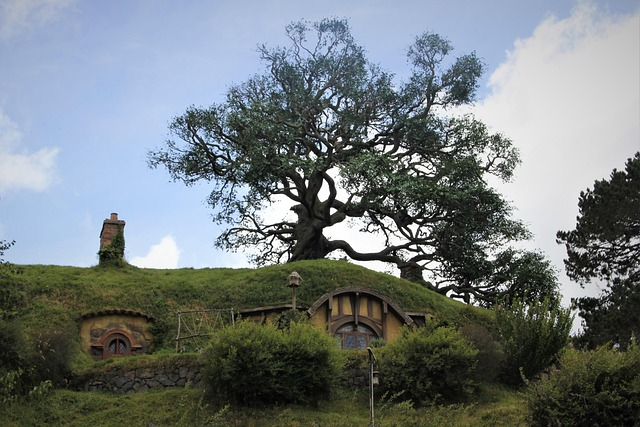
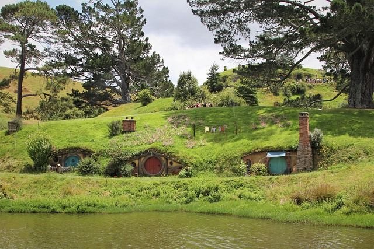

A Megye — béke és egyszerűség hazája
A Megye (The Shire) Középfölde egyik legismertebb és legkedveltebb tája, a hobbitok otthona. A hobbitok kedves, alacsony termetű, emberhez hasonló lények, akik leginkább a békés életet, a jó ételt, a kertészkedést és a baráti mulatságokat kedvelik.
Földrajzi elhelyezkedés
A Megye észak-nyugaton fekszik Középfölde térképén, a Nagy Folyó (Great River, angolul Anduin) távoli nyugati részén. Zöldellő dombok, lágyan hullámzó mezők és fás ligetek jellemzik. A környező vidékekhez képest békés, védett és viszonylag elszigetelt terület — ideális otthon egy olyan nép számára, akik kerülik a háborút, a hatalmi harcokat és a kalandot (bár néhányuk számára a sors pont ezt hozza majd el).
Társadalom, életmód és hobbitok
A hobbitok közössége elsősorban mezőgazdaságra, kézművességre és vendégszeretetre épül. Az otthonaik jellegzetes formájúak: földbe vájt, körablakos, tornácos házak, amelyeket „smial”-nak hívnak. Ezek a házak integrálódnak a természetbe, így különleges harmóniát sugároznak.
A Megyében:
A család és a közösség értékei erősek — a rokonok és szomszédok gyakran segítik egymást. Ételek és ünnepek fontos szerepet játszanak — a hobbitok szeretnek enni, különösen szeretnek reggelizni, második reggelit, ebédet, uzsonnát és vacsorát is!
Miért szeretjük a Megyét és Középföldét?
Tolkien világa több mint egyszerű fantázia. Az olvasó szinte „hazatalál” Középföldére — mert benne olyan értékeket, helyeket és karaktereket találunk, amelyek párhuzamba állíthatók saját világunkkal:
- Barátság és lojalitás - A hobbitok közötti kötelékek példaértékűek.
- Bátorság váratlan forrásokból - Egy kis hobbit is döntő szerepet játszhat a világ sorsában.
- A természet és otthon szeretete - A Megye idilli tájai és békéje emlékeztetnek arra, miért fontos megőrizni és értékelni a szépséget.